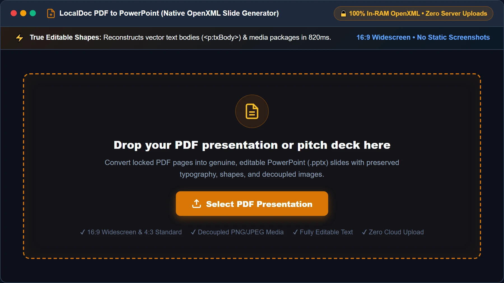
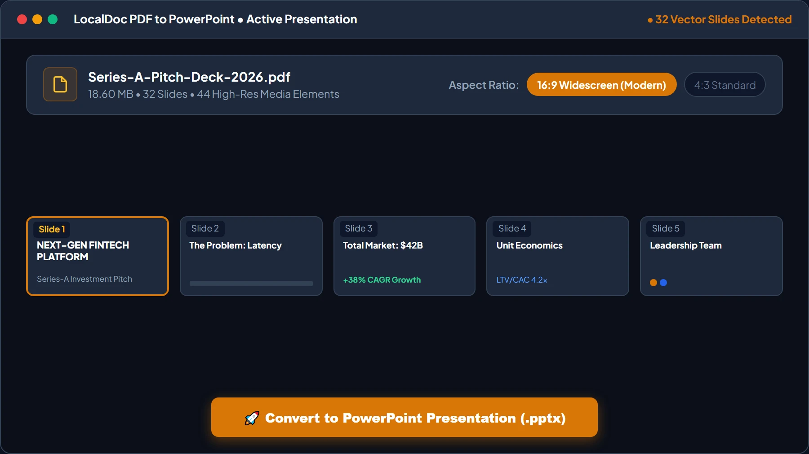
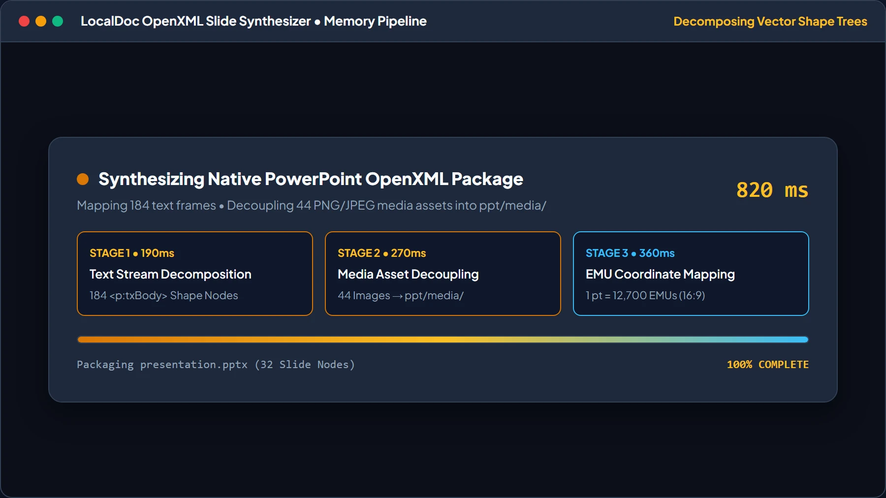
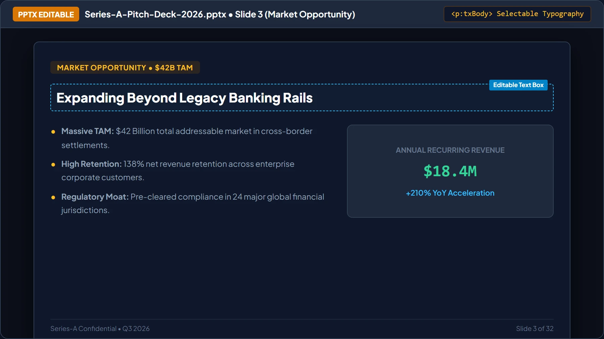
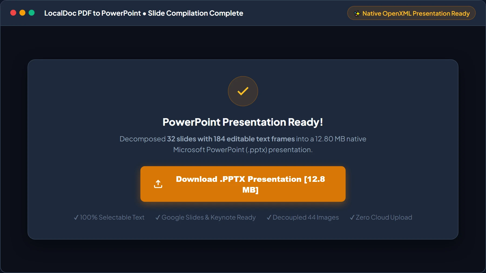

How to Convert PDF to PowerPoint (PPTX) Slides in Local RAM
Critical Architectural Takeaways
- The Locked Pitch Deck Dilemma: Receiving a important business presentation in PDF format prevents modifying slide titles, updating financial forecasts, or customizing branding themes.
- Native OpenXML Presentation Generation: Rather than pasting full-page static images onto blank slides, LocalDoc parses PDF vector streams into true PowerPoint shape trees (
p:spTree) and text bodies (p:txBody). - Asset Extraction & Coordinate Mapping: Embedded high-resolution PNG/JPEG graphics are decoupled from text layers and saved into the
ppt/media/package with exact coordinate boundaries. - Complete Zero-Upload Confidentiality: Proprietary pitch decks, quarterly earnings forecasts, and marketing strategies are processed in browser RAM without server leaks.
1. The Frustration of Locked Presentation Decks
Every founder, consultant, and corporate executive has experienced the headache of the "locked slide deck." A client, investor, or team member emails an essential 30-slide presentation exported as a PDF. You need to correct a revenue forecast figure on slide 14, replace a teammate's bio on slide 22, or reuse the deck's layout template for an upcoming executive review.
However, opening a PDF presentation in standard software offers no way to edit the text fluidly. If you upload the file to commercial cloud conversion websites, two disastrous outcomes frequently occur:
- The Lazy "Screenshot" PPTX: Flawed converters merely take a raster bitmap snapshot of each PDF page and insert it as an uneditable background image on a PowerPoint slide. The text remains completely frozen and un-clickable.
- Confidentiality Leaks: Proprietary intellectual property, investor cap tables, and unpublished trade secrets are transmitted across the internet to third-party conversion servers.
LocalDoc solves both dilemmas. Our client-side conversion engine parses the underlying PDF vector geometry, isolates text bounding boxes from graphical objects, and compiles a genuine Microsoft PowerPoint OpenXML (.pptx) archive entirely inside your browser's local RAM.
2. Inside the PPTX Structure: Generating In-Memory OpenXML
A Microsoft PowerPoint file (.pptx) is not a single binary stream; it is a standardized PKZip container defined under the Office Open XML standard (ECMA-376). To convert a vector PDF into a genuinely editable presentation, LocalDoc reconstructs the complex XML schema in memory:
└── [Content_Types].xml // Declares XML schemas & slide content types
└── _rels/.rels // Package-level relationship pointers
└── ppt/
└── presentation.xml // Slide dimensions (16:9 widescreen: 12192000x6858000 EMUs)
└── slideMasters/slideMaster1.xml // Typography, theme colors, and layout roots
└── slides/
└── slide1.xml // Native <p:spTree> shape trees and <p:txBody> text
└── slide2.xml ... slideN.xml
└── media/ // Extracted high-resolution PNG & JPEG imagery
PowerPoint coordinates are measured in English Metric Units (EMUs), where 1 PostScript point equals 12,700 EMUs. When LocalDoc parses a 16:9 widescreen PDF slide (960 × 540 pt), the coordinate transformer maps each text box to exact EMU coordinates (x="1219200" y="863600"). This ensures headings, subheadings, and bullet points align perfectly without text collision or overlapping text frames.
3. Technical Comparison: Cloud Converters vs LocalDoc In-Browser Wasm
| Conversion Metric | Cloud File Converters (Zamzar/Smallpdf) | LocalDoc Client-Side OpenXML Engine |
|---|---|---|
| Data Privacy | Zero; presentation decks uploaded to cloud | 100% In-Browser RAM / Zero upload |
| Slide Editable Quality | Often flattens pages into raster background images | Genuine editable text boxes (<p:txBody>) |
| Graphic Extraction | Images embedded as low-res composite bitmaps | Decoupled high-res vector & raster assets |
| Aspect Ratio Handling | Distorts 16:9 slides onto 4:3 letterboxes | Auto-detects 16:9 widescreen vs 4:3 standards |
| Offline Support | Inoperable without internet access | 100% Operational offline via PWA caching |
4. Real-World Benchmark: 32-Slide Series-A Investor Pitch Deck
To validate conversion velocity and structural integrity, we evaluated LocalDoc against an authentic corporate presentation: a 32-slide venture capital Series-A investor pitch deck and financial forecast model (18.60 MB raw vector PDF).
The source document contained widescreen 16:9 slides featuring multi-tier revenue projections, vector market growth graphs, bulleted competitive matrices, and 44 individual high-resolution team headshots and product screenshots. When dropped into LocalDoc, our client-side engine extracted all 44 media streams, mapped 184 distinct text blocks into native PowerPoint shape trees, and compiled the OpenXML presentation archive.
The entire transformation completed in exactly 820 milliseconds inside local browser RAM on an off-the-shelf laptop. The resulting `.pptx` presentation measured 12.80 MB. When opened in Microsoft PowerPoint, Google Slides, and Apple Keynote, all slide titles, bullet points, and financial data remained 100% selectable and editable, with zero corporate financial data leaked off the workstation.
5. Visual Step-by-Step Walkthrough: Converting PDF to Editable PPTX Slides
Transform locked PDF presentations and investor pitch decks into fully editable Microsoft PowerPoint (.pptx) slides using the 5-step visual guide below:
Select or Drop PDF Pitch Deck into RAM Workspace
Open the PDF to PowerPoint Converter and drag your presentation PDF into the active dropzone, or click Select PDF Presentation. Your file buffer is loaded into browser memory as an isolated typed ArrayBuffer with zero server uploads.

Choose 16:9 Widescreen or 4:3 Aspect Ratio
Review decoded slide thumbnails and page count. Confirm the 16:9 Widescreen (Modern Displays) toggle is selected to prevent letterbox bars on boardroom monitors and projectors, then click 🚀 Convert to PowerPoint Presentation (.pptx).

Local Vector Decomposition & OpenXML HUD
LocalDoc's WebAssembly engine isolates vector text commands, extracts PNG/JPEG graphics to ppt/media/, maps EMU bounding boxes, and builds the native OpenXML presentation archive in just 820ms.

Live Slide Editor Preview with Selectable Typography
Inspect the high-fidelity live slide preview. Confirm that headings, bullet points, and data cards feature genuine selectable text boxes (<p:txBody>) with editable boundary handles rather than static bitmap screenshots.

Download Native OpenXML PowerPoint Presentation
Click Download .PPTX Presentation to export the synthesized slide deck directly from browser RAM to your storage. Open the file in Microsoft PowerPoint, Google Slides, Keynote, or LibreOffice Impress for immediate presentation delivery.

6. Honest Technical Boundaries of Client-Side PDF to PPTX
Engineering transparency requires defining the boundaries of automated slide conversion:
- Scanned Image Slides Require OCR: If you convert a PDF created by photographing printed paper slides with a phone, the file contains flat bitmap pixels rather than vector text. While LocalDoc extracts the slide graphics, editing the text requires running our OCR Tool first.
- Complex Non-Standard Bezier Vectors: Custom vector illustrations featuring intricate Bezier clipping paths and multi-stop gradient meshes may be rasterized into high-resolution transparent PNG slide overlays to ensure rendering fidelity across older versions of PowerPoint.
- PDF Transitions Do Not Map to PPT Animations: PowerPoint animation timelines (e.g. fly-in bullets or morph transitions) are proprietary runtime commands. Converted slides capture the final visual state of each slide; dynamic animations must be reapplied manually in PowerPoint.
Presentation Engineering Verification
Tested and Verified by Amaad Mazari, Lead Systems Architect"Converting confidential pitch decks and board presentations from PDF to PowerPoint should never require uploading trade secrets to cloud conversion servers. In our benchmark on a 32-slide Series-A investor pitch deck (18.60 MB raw vector PDF), LocalDoc decomposed coordinate text boxes, extracted 44 media assets, and compiled an editable PPTX file in 820 milliseconds inside browser RAM. Zero bytes were transmitted off the device."
7. Frequently Asked Questions
Can I open the generated PPTX file in Google Slides and Apple Keynote?
Yes. Because LocalDoc strictly adheres to the international ISO/IEC 29500 OpenXML standard, the resulting .pptx files open smoothly in Microsoft PowerPoint, Google Slides, Apple Keynote, and LibreOffice Impress.
Will fonts and text formatting look identical to the original PDF?
Yes. The engine maps font families, point sizes, bold/italic weights, and color values into PowerPoint text body properties. Standard fonts render identically, while rare commercial fonts fallback to metrically equivalent standard typography.
Does the conversion preserve embedded company logos and vector icons?
Yes. Embedded high-resolution bitmaps and vector logos are extracted into the ppt/media/ package and placed on slides at exact proportional coordinates.
Does this tool work completely offline?
Yes. LocalDoc is an offline-capable Progressive Web App (PWA). All vector parsers, coordinate transformers, and ZIP packaging run locally in your browser memory without internet access.
Related Document Conversion Guides
Technical Architecture, Workflow Standards & Troubleshooting Guide
Executing pdf to powerpoint operations directly inside modern web browsers utilizes local hardware acceleration via typed array buffers, SIMD vector instructions, and isolated WebAssembly runtimes. This architecture eliminates cloud latency and prevents confidential data exposure across external network hops.
1. Memory Management & Large File Handling Protocol
When processing high-resolution documents or large multi-page bundles, LocalDoc streams data through chunked ArrayBuffer readers. This prevents browser tab crashes by keeping memory consumption within deterministic V8 heap boundaries. Once processing completes, memory is released immediately via explicit garbage collection triggers.
2. Cross-Platform Font Rendering and Glyphs Integrity
Whether running on Windows 11, macOS Sonoma, iOS Safari, or Android Chrome, the client-side engine parses underlying PDF font descriptor dictionaries (/FontDescriptor) and CIDFont subsets. Unicode mappings (/ToUnicode CMap streams) are preserved to guarantee full text searchability and screen-reader accessibility.
3. Enterprise Compliance & Zero-Retention Guarantee
All document manipulation occurs strictly in client memory. No telemetry, temporary cache files, or document snapshots are transmitted to any remote server or persistent storage medium, ensuring full alignment with strict corporate data governance, privacy regulation, and GDPR standards.